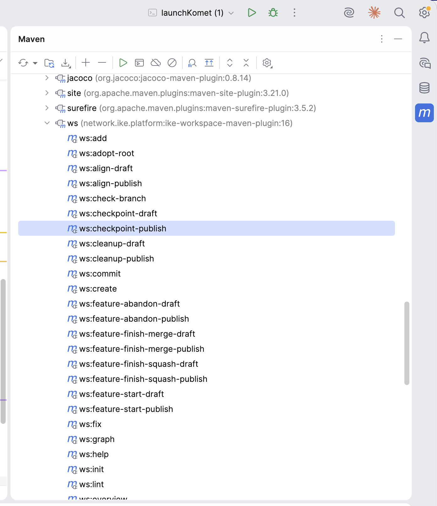

IKE Platform
IKE Workspace Maven Plugin 175
- Overview Introduction
- Documentation Workspace Lifecycle ws:* Goal Reference Workspace Version Resolution
- Parent Project IKE Platform
- Reports Project Information 6 Project Reports 2
IKE Workspace Maven Plugin
The ike-workspace-maven-plugin provides the ws:* goal prefix — 58 goals that coordinate cross-repository operations across an IKE workspace. Where bare git only sees one repo at a time, the workspace plugin fans out across every checked-out subproject in topological order.
| Coordinate | Value |
|---|---|
| Group ID | network.ike.platform |
| Artifact ID | ike-workspace-maven-plugin |
| Goal prefix | ws: |
| Packaging | maven-plugin |
| Java version | 25 |
When to reach for it
A workspace is a directory containing one or more git repositories described by a single workspace.yaml manifest. Use this plugin whenever an operation spans more than one repo:
- Creating a feature branch in 5 repos that resolve to each other via internal SNAPSHOT versions.
- Releasing 3 components in topological order so each downstream consumer’s release sees the upstream’s freshly published artifact.
- Pulling, pushing, or committing across the workspace in one command instead of
cd-ing into each subproject. - Auditing the workspace state — manifest consistency, dependency convergence, hygiene gates.
If your operation only touches one repo, plain git is the right tool. The workspace plugin is for fanning out.
Documentation
| Page | Purpose |
|---|---|
| ws:* Goal Reference[1] | Comprehensive per-goal docs. Every goal, what it does, key parameters, examples. Quick-reference table at the top. |
| Workspace Lifecycle[2] | Narrative tour. The state machine of a workspace and how the ws:* goals are the named transitions between states. Read this first if you’re new to the workspace model. |
The two-phase pattern
Most ws:* goals that mutate state come in a draft/publish pair:
mvn ws:align-draft # report what would change, write nothing
mvn ws:align-publish # apply the changesThe bare goal name (ws:align) is wired to the draft variant. This is a deliberate convention from ike-issues#200: every workspace mutation is two-phase, with a real chance to audit the draft before committing.
Goals that are purely read-only (e.g., ws:overview, ws:graph) do not have a publish counterpart — they are always safe.
Per-goal markdown reports
Every ws:* goal writes its output to a markdown file alongside workspace.yaml (e.g., ws꞉overview.md, ws꞉release-draft.md). The colon in filenames uses the modifier-letter form (U+A789) so unix tooling treats the names as plain identifiers.
Use ws:report to list and open them — newest first — in your default file manager.
Quick start — IntelliJ IDEA
Open the workspace project in IntelliJ. The Maven tool window (right sidebar, View → Tool Windows → Maven if hidden) auto-discovers the ws:* goals from this plugin’s <pluginManagement> declaration in ike-parent.

Expand the ws (network.ike.platform:ike-workspace-maven-plugin:…) entry to see all 58 goals as clickable items:

Common interactions:
- Run a read-only goal (
ws:overview,ws:lint,ws:release-status) — double-click the goal in the tree. Output appears in the Run tool window at the bottom. - Run a goal with parameters (e.g.
ws:feature-start-publishneeds-Dfeature=…) — right-click the goal → Modify Run Configuration… → fillProperties(e.g.feature=my-thing,subproject=tinkar-core) → Run. - Pin frequently-used invocations — once a Run Configuration is saved, it appears in the toolbar dropdown for one-click access on subsequent runs.
- Discover goals —
ws:helpprints the registry, but the Maven tool window has all goals visible by name without running anything.
Goal naming follows the draft/publish convention — bare names (e.g. ws:align) preview without writing; -publish variants apply.
Quick start — Command line
# In a directory with workspace.yaml + cloned subprojects:
mvn ws:overview # see what you have
mvn ws:sync # daily-driver: pull + push
mvn ws:feature-start-publish -Dfeature=foo # new feature branch
mvn ws:feature-finish-squash-publish -Dfeature=foo
# Discovering goals at runtime:
mvn ws:help # generated from WsGoal enumFor a complete first-time-setup walkthrough, see Workspace Getting Started[3].
Source
- GitHub:
ike-platform/ike-workspace-maven-plugin[4] - Issues:
IKE-Network/ike-issues[5] (cross-project tracker)